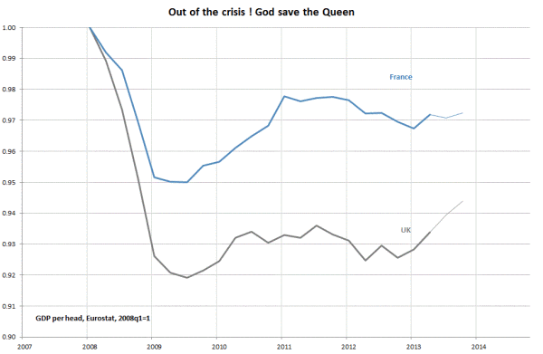
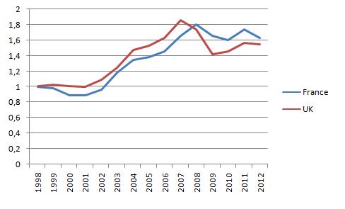
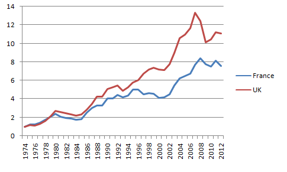
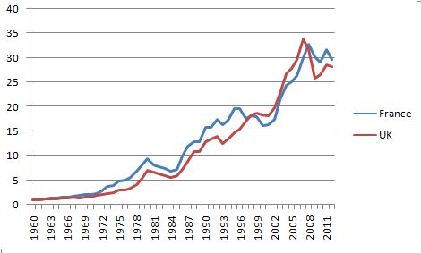
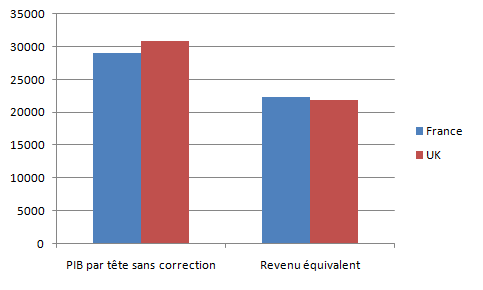

2014-03-01
Lorsqu’un journaliste demanda à l’écrivain britannique Douglas William Jerrold ce qu’il préférait entre la France et l’Angleterre, il répondit “La Manche”.
La blogosphère française s’agite sur un “match économique France versus Royaume-Uni” suite à ce graphique de Xavier Timbeau sur les répercussions de la crise sur la productivité des deux côtés de la Manche.

La France s’en sort donc bien mieux!!! Olivier Bouba-Olga surenchérit à juste titre avec un graphique sur l’emploi, mais lorsqu’un lecteur attentif au graphique des PIB par tête dont l’année de base est 2008 fait la remarque “on prouvera tout avec la bonne date de départ” il répond sereinement “je vous laisse essayer […] Vous pourriez isoler des petits intervalles pour lesquelles la dynamique UK est plus favorable, mais sur les vingt dernières années, et depuis le début de la crise, il n’y a pas photo”.
Je relève le défi car ce propos me donne l’occasion de discuter d’un thème qui me tient à coeur portant justement sur l’importance de la référence que l’on choisit. J’utilise les données de la banque mondiale pour les PIB par tête (en dollars) que j’ai sous la main.
Prenons l’année 1998, cela a du sens pour de multiples raisons, primo c’est une période où la construction européenne avance à grand pas. Pour certains français c’est un peu une période bénie où ils avaient du franc dans leur porte-monnaie et où la France blanc-black-beur allait bien… Pour la City, c’est aussi un point de référence important, la crise asiatique débouche sur un retour des capitaux et la construction européenne va lui permettre de retrouver son lustre d’antan. Bref, ce point de référence est justifiable (mais tout aussi critiquable, j’y reviendrai).

On observe alors que jusqu’à la crise de 2008 la productivité par tête des anglais a progressé bien plus rapidement que celle des français. Puis la finance s’est écroulée, le Royaume-Uni plus spécialisé sur ce secteur en a payé le prix fort.* Peut-on en conclure que le match a été gagné par la France?
Prenons l’année 1974. Là encore, si l’on accepte de prendre 2008, on ne peut qu’admettre que 74 est une bonne date. C’est à partir de cette date que le chômage devient massif et que les économies développées s’enlisent dans des taux de croissance faibles associés à un long processus de désindustrialisation et de tertiarisation de l’économie.

Le graphique est alors étonnant, la productivité anglaise si l’on choisit cette base a totalement dominé la France sur toute la période! Le schéma économique anglais est-il donc le bon? Non, pas plus que précédemment pour la France. Vous l’aurez compris, l’année de référence pèse énormément sur nos conclusions.
Prenons l’année 1960, au milieu des trente glorieuses, période mythique avec des taux de croissance important et pas de chômage. Nos grand-parents à n’en pas douter considéreraient que c’est une sacrée référence. C’était cependant une période où le PIB par tête était bien plus faible à ce que l’on connaît aujourd’hui, la référence (i.e. le dénominateur) pèse donc beaucoup moins que pour les années 1974, 1998, 2008. Qu’observe t-on?

Pour moi ici le tableau d’affichage du match nous donne France: 3 - UK: 3, pour trois révolutions économiques partout. Comme le disait Paul Krugman “Productivity isn’t everything, but in the long run it is almost everything” (PK, The Age of Diminished Expectations, MIT Press, (1994))
La productivité dépend avant tout des avancées technologiques et depuis déjà bien longtemps les deux pays sont grossièrement au même niveau. Si le Royaume-Uni a été le chef de file en Europe des innovations financières qui lui ont permis d’élever légèrement son PIB par tête au dessus de celui de la France, aujourd’hui où disons depuis que ces innovations ont été dépréciées, le pays est à peu près au même niveau. Légèrement en dessous si vous y tenez, mais la différence en terme de productivité, aujourd’hui comme hier, est mineure.
Je pense que les auteurs cités plus haut seront tous les deux d’accord avec moi pour dire que le match se joue ailleurs. Pour réellement arbitrer les performances économiques, il faudrait aller bien au delà du PIB par tête et regarder le bien-être économique des citoyens, c’est à dire comparer le taux de chômage, les inégalités, le système de santé, les situations familiales, les liens sociaux… Ce travail consiste aussi à se donner une référence, mais pas une année de référence (comme ci-dessus, on peut faire mieux) mais plutôt un idéal économique en référence. Si par exemple en posant la question aux anglais et aux français de savoir combien de revenu ils seraient prêt à céder pour avoir moins d’inégalités et atteindre un “idéal” (disons le taux d’égalité du Luxembourg ou de la Norvège… je donne simplement ces exemples pour donner du concret, mais la question de la référence est totalement ouverte) quel serait le score du match? Idem si on leur posait la question en terme de santé, de risque de chômage etc…
Le runmycode de Gaulier et Fleurbaey (2009) nous permet de jouer avec ces notions. Pour un même taux d’aversion pour l’inégalité (j’ai utilisé la version démo avec 0.8), les anglais seraient prêts à débourser beaucoup plus que les français, le revenu équivalent (i.e. le revenu une fois corrigé de cette somme) serait donc très proche pour l’année 2004 qui est pourtant une année où le match semblait être gagné par le Royaume-Uni!

En clair, les différences les plus importantes ne sont sans doute pas sur la production mais sur d’autres variables (chômage, insécurité etc) qui hélas sont à leur plus haut dans les deux pays mais avec une situation certainement encore plus catastrophique pour les anglais. Inutile de s’énerver exclusivement sur les PIB et sur une année donnée, il est temps de réaliser de nouvelles comparaisons (qui incluront ces PIB tout en les corrigeant) et qui permettront de mieux mesurer les points faibles et les points forts de chaque économie.
F. Candau
Note de bas de post:
J’ai longtemps été gêné pour dire que les fluctuations d’un secteur pouvait expliquer de grandes fluctuations pour un grand pays, mais depuis l’excellent papier de Gabaix j’ose davantage, il montre les variations du PIB américain ne dépendent pas d’une somme immense de petit agents mais simplement d’une centaine de grosse firmes (article à méditer pour un quelconque passage micro-macro en termes de fluctuation).
**Evitez de me commenter une merveilleuse inversion de tendance du PIB en Angleterre, je n’y crois pas non plus et j’ai déjà marqué un certain scepticisme ici avec d’ailleurs un graph qui ressemblait fort à celui de Timbeau mais pour un match UK/USA